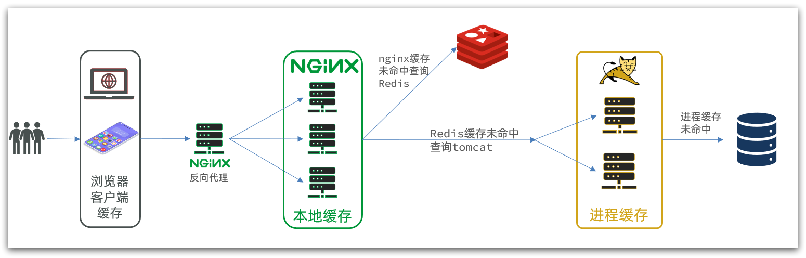
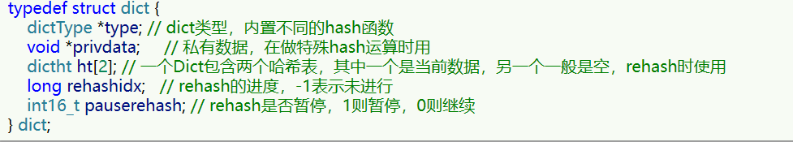
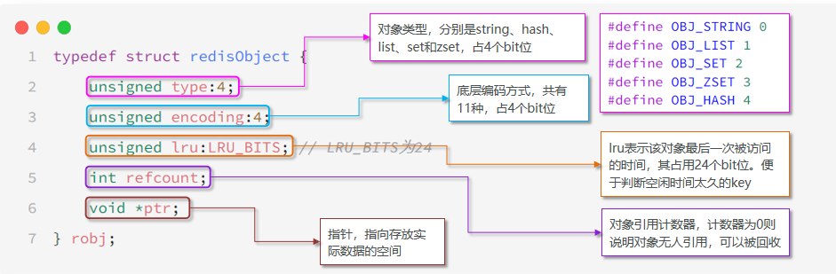

Redis
高级篇¶
分布式缓存¶
单机Redis存在如下问题：
- 数据丢失问问题
-
实现持久化
-
并发不足问题
-
搭建主从集群
-
存储能力问题
-
搭建分片集群
-
故障恢复问题
- 利用哨兵机制
Redis持久化¶
Redis有两种持久化方案：
- RDB持久化
- AOF持久化
RDB持久化¶
RDB全称Redis Database Backup file（Redis数据备份文件），也被叫做Redis数据快照。简单来说就是把内存中的所有数据都记录到磁盘中。当Redis实例故障重启后，从磁盘读取快照文件，恢复数据。快照文件称为RDB文件，默认是保存在当前运行目录。
RDB持久化在四种情况下会执行：
- 执行save命令（会阻塞主进程）
- 执行bgsave命令（异步执行）
- Redis停机时
- 触发RDB条件时
Redis内部有触发RDB的机制，可以在redis.conf文件中找到，格式如下：
## 900秒内，如果至少有1个key被修改，则执行bgsave ， 如果是save "" 则表示禁用RDB
save 900 1
save 300 10
save 60 10000
RDB的其它配置也可以在redis.conf文件中设置：
## 是否压缩 ,建议不开启，压缩也会消耗cpu，磁盘的话不值钱
rdbcompression yes
## RDB文件名称
dbfilename dump.rdb
## 文件保存的路径目录
dir ./
bgsave开始时会fork主进程得到子进程，子进程共享主进程的内存数据。完成fork后读取内存数据并写入 RDB 文件。
fork采用的是copy-on-write技术（写时复制）：
- 当主进程执行读操作时，访问共享内存；
- 当主进程执行写操作时，则会拷贝一份数据，执行写操作。

RDB方式bgsave的基本流程？
- fork主进程得到一个子进程，共享内存空间
- 子进程读取内存数据并写入新的RDB文件
- 用新RDB文件替换旧的RDB文件
RDB会在什么时候执行？save 60 1000代表什么含义？
- 默认是服务停止时
- 代表60秒内至少执行1000次修改则触发RDB
RDB的缺点？
- RDB执行间隔时间长，两次RDB之间写入数据有丢失的风险
- fork子进程、压缩、写出RDB文件都比较耗时
AOF持久化¶
AOF全称为Append Only File（追加文件）。Redis处理的每一个写命令都会记录在AOF文件，可以看做是命令日志文件。
AOF默认是关闭的，需要修改redis.conf配置文件来开启AOF：
## 是否开启AOF功能，默认是no
appendonly yes
## AOF文件的名称
appendfilename "appendonly.aof"
AOF的命令记录的频率也可以通过redis.conf文件来配置：
## 表示每执行一次写命令，立即记录到AOF文件
appendfsync always
## 写命令执行完先放入AOF缓冲区，然后表示每隔1秒将缓冲区数据写到AOF文件，是默认方案
appendfsync everysec
## 写命令执行完先放入AOF缓冲区，由操作系统决定何时将缓冲区内容写回磁盘
appendfsync no
对比：
| 配置项 | 存盘机制 | 优点 | 缺点 |
|---|---|---|---|
| Always | 同步 | 可靠性高 | 性能影响大 |
| everysec | 每秒 | 性能适中 | 可能丢失1秒数据 |
| no | 操作系统控制 | 性能最好 | 可靠性差 |
AOF文件重写
因为是记录命令，AOF文件会比RDB文件大的多。而且AOF会记录对同一个key的多次写操作，但只有最后一次写操作才有意义。通过执行bgrewriteaof命令，可以让AOF文件执行重写功能，用最少的命令达到相同效果。
Redis也会在触发阈值时自动去重写AOF文件。阈值也可以在redis.conf中配置：
## AOF文件比上次文件 增长超过多少百分比则触发重写
auto-aof-rewrite-percentage 100
## AOF文件体积最小多大以上才触发重写
auto-aof-rewrite-min-size 64mb
对比
| RDB | AOF | |
|---|---|---|
| 持久化方式 | 定时做内存快照 | 记录写命令 |
| 数据完整性 | 不完整，为备份的数据丢失 | 相对完整，取决于存盘策略 |
| 文件大小 | 有压缩机制，体积小 | 记录命令，体积大 |
| 宕机恢复速度 | 很快 | 慢 |
| 数据恢复优先级 | 低 | 高（因为完整性更高） |
| 系统资源占用 | 高，大量CPU和内存消耗 | 低，主要占用磁盘IO（文件重写时占用CPU和内存） |
| 使用场景 | 可以容忍部分数据丢失 | 对数据完整性要求高 |
主从集群¶
哨兵¶
分片集群¶
多级缓存¶
传统的缓存策略一般是请求到达Tomcat后，先查询Redis，如果未命中则查询数据库
存在下面的问题：
-
请求要经过Tomcat处理，Tomcat的性能成为整个系统的瓶颈
-
Redis缓存失效时，会对数据库产生冲击
多级缓存就是充分利用请求处理的每个环节，分别添加缓存，减轻Tomcat压力，提升服务性能：
- 浏览器访问静态资源时，优先读取浏览器本地缓存
- 访问非静态资源（ajax查询数据）时，访问服务端
- 请求到达Nginx后，优先读取Nginx本地缓存
- 如果Nginx本地缓存未命中，则去直接查询Redis（不经过Tomcat）
- 如果Redis查询未命中，则查询Tomcat
- 请求进入Tomcat后，优先查询JVM进程缓存
- 如果JVM进程缓存未命中，则查询数据库

在多级缓存架构中，Nginx内部需要编写本地缓存查询、Redis查询、Tomcat查询的业务逻辑，因此这样的nginx服务不再是一个反向代理服务器，而是一个编写业务的Web服务器了。

[!TIP]
nginx和tomcat都可以采用集群模式
JVM进程缓存¶
Caffeine¶
- 分布式缓存，例如Redis：
- 优点：存储容量更大、可靠性更好、可以在集群间共享
- 缺点：访问缓存有网络开销
- 场景：缓存数据量较大、可靠性要求较高、需要在集群间共享
- 进程本地缓存，例如HashMap、GuavaCache：
- 优点：读取本地内存，没有网络开销，速度更快
- 缺点：存储容量有限、可靠性较低、无法共享
- 场景：性能要求较高，缓存数据量较小
Caffeine是一个基于Java8开发的，提供了近乎最佳命中率的高性能的本地缓存库。目前Spring内部的缓存使用的就是Caffeine。GitHub地址：https://github.com/ben-manes/caffeine
<dependency>
<groupId>com.github.ben-manes.caffeine</groupId>
<artifactId>caffeine</artifactId>
</dependency>
基本使用
@Test
void testBasicOps() {
// 构建cache对象
Cache<String, String> cache = Caffeine.newBuilder().build();
// 存数据
cache.put("gf", "迪丽热巴");
// 取数据
String gf = cache.getIfPresent("gf");
System.out.println("gf = " + gf);
// 取数据，包含两个参数：
// 参数一：缓存的key
// 参数二：Lambda表达式，表达式参数就是缓存的key，方法体是查询数据库的逻辑
// 优先根据key查询JVM缓存，如果未命中，则执行参数二的Lambda表达式
String defaultGF = cache.get("defaultGF", key -> {
// 根据key去数据库查询数据
return "柳岩";
});
System.out.println("defaultGF = " + defaultGF);
}
Caffeine提供了三种缓存清除策略：
- 基于容量：设置缓存的数量上限
// 创建缓存对象
Cache<String, String> cache = Caffeine.newBuilder()
.maximumSize(1) // 设置缓存大小上限为 1
.build();
- 基于时间：设置缓存的有效时间
// 创建缓存对象
Cache<String, String> cache = Caffeine.newBuilder()
// 设置缓存有效期为 10 秒，从最后一次写入开始计时
.expireAfterWrite(Duration.ofSeconds(10))
.build();
- 基于引用：设置缓存为软引用或弱引用，利用GC来回收缓存数据。性能较差，不建议使用。
[!CAUTION]
在默认情况下，当一个缓存元素过期的时候，Caffeine不会自动立即将其清理和驱逐。而是在一次读或写操作后，或者在空闲时间完成对失效数据的驱逐。
案例¶
@Configuration
public class CaffeineConfig {
@Bean
public Cache<Long, Item> itemCache(){
return Caffeine.newBuilder()
.initialCapacity(100)
.maximumSize(10_000)
.build();
}
}
@RestController
@RequestMapping("item")
public class ItemController {
@Autowired
private IItemService itemService;
@Autowired
private Cache<Long, Item> itemCache;
@GetMapping("/{id}")
public Item findById(@PathVariable("id") Long id) {
// 先查询缓存，再判断是否查询数据库
return itemCache.get(id, key -> itemService.query()
.ne("status", 3)
.eq("id", key)
.one()
);
}
}
Lua入门¶
Nginx编程需要用到Lua语言，Lua 是一种轻量小巧的脚本语言，用标准C语言编写并以源代码形式开放， 其设计目的是为了嵌入应用程序中，从而为应用程序提供灵活的扩展和定制功能。官网：https://www.lua.org/
[!NOTE]
Lua经常嵌入到C语言开发的程序中，例如游戏开发、游戏插件等。
Nginx本身也是C语言开发，因此也允许基于Lua做拓展。
变量¶
Lua中支持的常见数据类型包括：

[!TIP]
Lua提供了type()函数来判断一个变量的数据类型
print(type('hello world')) --------> string
Lua声明变量的时候无需指定数据类型，而是用local来声明变量为局部变量：
-- 声明字符串，可以用单引号或双引号，
local str = 'hello'
-- 字符串拼接可以使用 ..
local str2 = 'hello' .. 'world'
-- 声明数字
local num = 21
-- 声明布尔类型
local flag = true
Lua中的table类型既可以作为数组，又可以作为Java中的map来使用。数组就是特殊的table，key是数组角标而已：
-- 声明数组 ，key为角标的 table
local arr = {'java', 'python', 'lua'}
-- 声明table，类似java的map
local map = {name='Jack', age=21}
Lua中的数组角标是从1开始，访问的时候与Java中类似：
-- 访问数组，lua数组的角标从1开始
print(arr[1])
Lua中的table可以用key来访问：
-- 访问table
print(map['name'])
print(map.age)
循环¶
遍历数组：
-- 声明数组 key为索引的 table
local arr = {'java', 'python', 'lua'}
-- 遍历数组
for index,value in ipairs(arr)
do
print(index, value)
end
遍历普通table
-- 声明map，也就是table
local map = {name='Jack', age=21}
-- 遍历table
for key,value in pairs(map) do
print(key, value)
end
函数¶
定义函数的语法：
function 函数名(argument1, argument2..., argumentn)
-- 函数体
return 返回值
end
-- 示例
function printArr(arr)
for index, value in ipairs(arr) do
print(value)
end
end
条件控制¶
if(布尔表达式)
then
--[ 布尔表达式为 true 时执行该语句块 --]
else
--[ 布尔表达式为 false 时执行该语句块 --]
end
与java不同，布尔表达式中的逻辑运算是基于英文单词：

OpenResty¶
OpenResty® 是一个基于 Nginx的高性能 Web 平台，用于方便地搭建能够处理超高并发、扩展性极高的动态 Web 应用、Web 服务和动态网关。具备下列特点：
- 具备Nginx的完整功能
- 基于Lua语言进行扩展，集成了大量精良的 Lua 库、第三方模块
- 允许使用Lua自定义业务逻辑、自定义库
官方网站： https://openresty.org/cn/
OpenResty监听请求¶
OpenResty的很多功能都依赖于其目录下的Lua库，需要在nginx.conf中指定依赖库的目录，并导入依赖：
- 添加对OpenResty的Lua模块的加载
修改/usr/local/openresty/nginx/conf/nginx.conf文件，在其中的http下面，添加下面代码：
##lua 模块
lua_package_path "/usr/local/openresty/lualib/?.lua;;";
##c模块
lua_package_cpath "/usr/local/openresty/lualib/?.so;;";
- 监听/api/item路径
修改/usr/local/openresty/nginx/conf/nginx.conf文件，在nginx.conf的server下面，添加对/api/item这个路径的监听：
location /api/item {
# 默认的响应类型
default_type application/json;
# 响应结果由lua/item.lua文件来决定
content_by_lua_file lua/item.lua;
}
- 在
/usr/loca/openresty/nginx/lua文件夹下，新建文件：item.lua
ngx.say('内容')
请求参数处理¶
openresty提供了API获取请求参数

查询Tomcat¶
nginx提供了内部API用以发送http请求：
local resp = ngx.location.capture("/path",{
method = ngx.HTTP_GET, -- 请求方式
args = {a=1,b=2}, -- get方式传参数（POST方式使用body）
})
返回的响应内容包括：
- resp.status：响应状态码
- resp.header：响应头，是一个table
- resp.body：响应体，就是响应数据
注意：这里的path是路径，并不包含IP和端口。这个请求会被nginx内部的server监听并处理。
但是我们希望这个请求发送到Tomcat服务器，所以还需要编写一个server来对这个路径做反向代理：
location /path {
# Tomcat地址
proxy_pass http://IP:PORT;
}
封装http工具¶
在/usr/local/openresty/lualib目录下，新建一个common.lua文件：
vi /usr/local/openresty/lualib/common.lua
内容如下:
-- 封装函数，发送http请求，并解析响应
local function read_http(path, params)
local resp = ngx.location.capture(path,{
method = ngx.HTTP_GET,
args = params,
})
if not resp then
-- 记录错误信息，返回404
ngx.log(ngx.ERR, "http请求查询失败, path: ", path , ", args: ", args)
ngx.exit(404)
end
return resp.body
end
-- 将方法导出
local _M = {
read_http = read_http
}
return _M
[!TIP]
这个工具将read_http函数封装到_M这个table类型的变量中，并且返回，这类似于导出。
使用的时候，可以利用
require('common')来导入该函数库，这里的common是函数库的文件名。
CJSON工具类¶
OpenResty提供了一个cjson的模块用来处理JSON的序列化和反序列化。
官方地址： https://github.com/openresty/lua-cjson/
- 引入cjson模块：
local cjson = require "cjson"
- 序列化
local obj = {
name = 'jack',
age = 21
}
-- 把 table 序列化为 json
local json = cjson.encode(obj)
- 反序列化
local json = '{"name": "jack", "age": 21}'
-- 反序列化 json为 table
local obj = cjson.decode(json);
print(obj.name)
基于ID负载均衡¶
实际开发中，OpenResty需要对tomcat集群做负载均衡。
而默认的负载均衡规则是轮询模式，例如，当我们查询/item/10001时：
- 第一次会访问8081端口的tomcat服务，在该服务内部就形成了JVM进程缓存
- 第二次会访问8082端口的tomcat服务，该服务内部没有JVM缓存（因为JVM缓存无法共享），会查询数据库
- ...
[!WARNING]
该情况下缓存并没有产生效果
nginx提供了基于请求路径做负载均衡的算法：
nginx根据请求路径做hash运算，把得到的数值对tomcat服务的数量取余，余数是几，就访问第几个服务，实现负载均衡。
[!TIP]
例如：
- 我们的请求路径是 /item/10001
- tomcat总数为2台（8081、8082）
- 对请求路径/item/1001做hash运算求余的结果为1
- 则访问第一个tomcat服务，也就是8081
只要id不变，每次hash运算结果也不会变，那就可以保证同一个商品，一直访问同一个tomcat服务，确保JVM缓存生效。
实现
修改/usr/local/openresty/nginx/conf/nginx.conf文件，实现基于ID做负载均衡。
首先，定义tomcat集群，并设置基于路径做负载均衡：
upstream tomcat-cluster {
hash $request_uri;
server 192.168.150.1:8081;
server 192.168.150.1:8082;
}
然后，修改对tomcat服务的反向代理，目标指向tomcat集群：
location /item {
proxy_pass http://tomcat-cluster;
}
重新加载OpenResty
nginx -s reload
Redis缓存¶
Redis缓存预热
Redis缓存会面临冷启动问题：
冷启动：服务刚刚启动时，Redis中并没有缓存，如果所有商品数据都在第一次查询时添加缓存，可能会给数据库带来较大压力。
缓存预热：在实际开发中，我们可以利用大数据统计用户访问的热点数据，在项目启动时将这些热点数据提前查询并保存到Redis中。
[!TIP]
可以利用
InitializingBean接口来实现，因为InitializingBean中的方法afterPropertiesSet可以在对象被Spring创建并且成员变量全部注入后执行。
查询Redis缓存
当请求进入OpenResty之后：
- 优先查询Redis缓存
- 如果Redis缓存未命中，再查询Tomcat
OpenResty提供了操作Redis的模块，我们只要引入该模块就能直接使用。但是为了方便，我们将Redis操作封装到之前的common.lua工具库中。
修改/usr/local/openresty/lualib/common.lua文件：
- 引入Redis模块，并初始化Redis对象
-- 导入redis
local redis = require('resty.redis')
-- 初始化redis
local red = redis:new()
red:set_timeouts(1000, 1000, 1000)
- 封装函数，用来释放Redis连接，其实是放入连接池
-- 关闭redis连接的工具方法，其实是放入连接池
local function close_redis(red)
local pool_max_idle_time = 10000 -- 连接的空闲时间，单位是毫秒
local pool_size = 100 --连接池大小
local ok, err = red:set_keepalive(pool_max_idle_time, pool_size)
if not ok then
ngx.log(ngx.ERR, "放入redis连接池失败: ", err)
end
end
- 封装函数，根据key查询Redis数据
-- 查询redis的方法 ip和port是redis地址，key是查询的key
local function read_redis(ip, port, key)
-- 获取一个连接
local ok, err = red:connect(ip, port)
if not ok then
ngx.log(ngx.ERR, "连接redis失败 : ", err)
return nil
end
-- 查询redis
local resp, err = red:get(key)
-- 查询失败处理
if not resp then
ngx.log(ngx.ERR, "查询Redis失败: ", err, ", key = " , key)
end
--得到的数据为空处理
if resp == ngx.null then
resp = nil
ngx.log(ngx.ERR, "查询Redis数据为空, key = ", key)
end
close_redis(red)
return resp
end
- 导出
-- 将方法导出
local _M = {
read_http = read_http,
read_redis = read_redis
}
return _M
Nginx本地缓存¶
OpenResty为Nginx提供了shared dict的功能，可以在nginx的多个worker之间共享数据，实现缓存功能。
- 开启共享字典，在nginx.conf的http下添加配置：
# 共享字典，也就是本地缓存，名称叫做：item_cache，大小150m
lua_shared_dict item_cache 150m;
- 操作共享字典：
-- 获取本地缓存对象
local item_cache = ngx.shared.item_cache
-- 存储, 指定key、value、过期时间，单位s，默认为0代表永不过期
item_cache:set('key', 'value', 1000)
-- 读取
local val = item_cache:get('key')
示例
-- 导入共享词典，本地缓存
local item_cache = ngx.shared.item_cache
-- 封装查询函数
function read_data(key, expire, path, params)
-- 查询本地缓存
local val = item_cache:get(key)
if not val then
ngx.log(ngx.ERR, "本地缓存查询失败，尝试查询Redis， key: ", key)
-- 查询redis
val = read_redis("127.0.0.1", 6379, key)
-- 判断查询结果
if not val then
ngx.log(ngx.ERR, "redis查询失败，尝试查询http， key: ", key)
-- redis查询失败，去查询http
val = read_http(path, params)
end
end
-- 查询成功，把数据写入本地缓存
item_cache:set(key, val, expire)
-- 返回数据
return val
end
缓存同步¶
[!NOTE]
大多数情况下，浏览器查询到的都是缓存数据，如果缓存数据与数据库数据存在较大差异，可能会产生比较严重的后果。
所以我们必须保证数据库数据、缓存数据的一致性，这就是缓存与数据库的同步。
缓存同步策略¶
-
设置有效期：给缓存设置有效期，到期后自动删除。再次查询时更新
-
优势：简单、方便
-
缺点：时效性差，缓存过期之前可能不一致
-
场景：更新频率较低，时效性要求低的业务
-
同步双写：在修改数据库的同时，直接修改缓存
-
优势：时效性强，缓存与数据库强一致
-
缺点：有代码侵入，耦合度高
-
场景：对一致性、时效性要求较高的缓存数据
-
异步通知：修改数据库时发送事件通知，相关服务监听到通知后修改缓存数据
-
优势：低耦合，可以同时通知多个缓存服务
-
缺点：时效性一般，可能存在中间不一致状态
-
场景：时效性要求一般，有多个服务需要同步
异步通知有两种实现方式，基于MQ（有少量的代码侵入）或者Canal（代码零侵入）


Canal¶
Canal [kə'næl]，译意为水道/管道/沟渠，canal是阿里巴巴旗下的一款开源项目，基于Java开发。基于数据库增量日志解析，提供增量数据订阅&消费。GitHub的地址：https://github.com/alibaba/canal
Canal是基于mysql的主从同步来实现的（Canal就是把自己伪装成MySQL的一个slave节点，从而监听master的binary log变化），再把得到的变化信息通知给Canal的客户端，进而完成对其它数据库的同步。
配置安装过程详见Canal安装
监听Canal¶
我们可以利用Canal提供的Java客户端，监听Canal通知消息。当收到变化的消息时，完成对缓存的更新。
可以使用GitHub上的第三方开源的canal-starter客户端。地址：https://github.com/NormanGyllenhaal/canal-client
与SpringBoot完美整合，自动装配。
- 引入依赖
<dependency>
<groupId>top.javatool</groupId>
<artifactId>canal-spring-boot-starter</artifactId>
<version>1.2.1-RELEASE</version>
</dependency>
- 配置文件
canal:
destination: heima # canal的集群名字，要与安装canal时设置的名称一致
server: 192.168.150.101:11111 # canal服务地址
- 修改实体类
通过@Id、@Column 等注解完成实体类与数据库表字段的映射
@Data
@TableName("tb_item")
public class Item {
@TableId(type = IdType.AUTO)
@Id
private Long id;//商品id
@Column(name = "name")
private String name;//商品名称
private String title;//商品标题
private Long price;//价格（分）
private String image;//商品图片
private String category;//分类名称
private String brand;//品牌名称
private String spec;//规格
private Integer status;//商品状态 1-正常，2-下架
private Date createTime;//创建时间
private Date updateTime;//更新时间
@TableField(exist = false)
@Transient // 不属于数据库表的数据
private Integer stock;
@TableField(exist = false)
@Transient
private Integer sold;
}
- 编写监听器
通过实现EntryHandler<T>接口编写监听器，监听Canal消息。注意两点：
- 实现类通过
@CanalTable("tb_item")指定监听的表信息 EntryHandler的泛型是与表对应的实体类
@CanalTable("tb_item") // 监听的数据库表名
@Component
public class ItemHandler implements EntryHandler<Item> {
@Autowired
private RedisHandler redisHandler; // 封装的Redis操作类，可使用StringRedisTemplate类代替
@Autowired
private Cache<Long, Item> itemCache;
@Override
public void insert(Item item) {
// 写数据到JVM进程缓存
itemCache.put(item.getId(), item);
// 写数据到redis
redisHandler.saveItem(item);
}
@Override
public void update(Item before, Item after) {
// 写数据到JVM进程缓存
itemCache.put(after.getId(), after);
// 写数据到redis
redisHandler.saveItem(after);
}
@Override
public void delete(Item item) {
// 删除数据到JVM进程缓存
itemCache.invalidate(item.getId());
// 删除数据到redis
redisHandler.deleteItemById(item.getId());
}
}
Redis最佳实践¶
[!NOTE]
Redis使用经验总结
Redis键值设计¶
优雅的key结构¶
Redis的Key虽然可以自定义，但最好遵循下面的几个最佳实践约定：
- 遵循基本格式：[业务名称]:[数据名]:[id]
- 长度不超过44字节
- 不包含特殊字符
这样设计的好处：
- 可读性强
- 避免key冲突
- 方便管理
- 更节省内存： key是string类型，底层编码包含int、embstr和raw三种。embstr在小于44字节使用，采用连续内存空间，内存占用更小。当字节数大于44字节时，会转为raw模式存储，在raw模式下，内存空间不是连续的，而是采用一个指针指向了另外一段内存空间，在这段空间里存储SDS内容，这样空间不连续，访问的时候性能也就会收到影响，还有可能产生内存碎片
拒绝BigKey¶
BigKey通常以Key的大小和Key中成员的数量来综合判定，例如：
- Key本身的数据量过大：一个String类型的Key，它的值为5 MB
- Key中的成员数过多：一个ZSET类型的Key，它的成员数量为10,000个
- Key中成员的数据量过大：一个Hash类型的Key，它的成员数量虽然只有1,000个但这些成员的Value（值）总大小为100 MB
[!TIP]
redis中可使用命令
MEMORY USAGE key查看Key占用内存
推荐值：
- 单个key的value小于10KB
- 对于集合类型的key，建议元素数量小于1000
BigKey的危害¶
- 网络阻塞
- 对BigKey执行读请求时，少量的QPS就可能导致带宽使用率被占满，导致Redis实例，乃至所在物理机变慢
- 数据倾斜
- BigKey所在的Redis实例内存使用率远超其他实例，无法使数据分片的内存资源达到均衡
- Redis阻塞
- 对元素较多的hash、list、zset等做运算会耗时较久，使主线程被阻塞
- CPU压力
- 对BigKey的数据序列化和反序列化会导致CPU的使用率飙升，影响Redis实例和本机其它应用
发现BigKey¶
redis-cli --bigkeys命令
[!NOTE]
利用redis-cli提供的--bigkeys参数，可以遍历分析所有key，并返回Key的整体统计信息与每个数据的Top1的key（不一定是BigKey）
- scan扫描
编程，利用scan扫描Redis中的所有key，利用strlen、hlen等命令判断key的长度（此处不建议使用MEMORY USAGE）
- 第三方工具
利用第三方工具，如 Redis-Rdb-Tools 分析RDB快照文件，全面分析内存使用情况
[!TIP]
官网 https://github.com/sripathikrishnan/redis-rdb-tools
-
网络监控
-
自定义工具，监控进出Redis的网络数据，超出预警值时主动告警
- 一般阿里云搭建的云服务器就有相关监控页面
删除BigKaey¶
BigKey内存占用较多，即便时删除这样的key也需要耗费很长时间，导致Redis主线程阻塞，引发一系列问题。
- redis 3.0 及以下版本
-
如果是集合类型，则遍历BigKey的元素，先逐个删除子元素，最后删除BigKey
-
Redis 4.0以后
- Redis在4.0后提供了异步删除的命令：
unlink
恰当的数据类型¶
- 例1：比如存储一个User对象，我们有三种存储方式：
①方式一：json字符串¶
| user:1 | {"name": "Jack", "age": 21} |
|---|---|
优点：实现简单粗暴
缺点：数据耦合，不够灵活
②方式二：字段打散¶
| user:1:name | Jack |
|---|---|
| user:1:age | 21 |
优点：可以灵活访问对象任意字段
缺点：占用空间大、没办法做统一控制
③方式三：hash（推荐）¶
| user:1 | name | jack |
| age | 21 |
优点：底层使用ziplist，空间占用小，可以灵活访问对象的任意字段
缺点：代码相对复杂
- 例2：假如有hash类型的key，其中有100万对field和value，field是自增id，这个key存在什么问题？如何优化？
| key | field | value |
| someKey | id:0 | value0 |
| ..... | ..... | |
| id:999999 | value999999 |
[!WARNING]
存在的问题：
- hash的entry数量超过500时，会使用哈希表而不是ZipList，内存占用较多
- 可以通过hash-max-ziplist-entries配置entry上限。但是如果entry过多就会导致BigKey问题
方案一¶
拆分为string类型
| key | value |
| id:0 | value0 |
| ..... | ..... |
| id:999999 | value999999 |
[!WARNING]
存在的问题：
string结构底层没有太多内存优化，内存占用较多
想要批量获取这些数据比较麻烦
方案二（推荐）¶
拆分为小的hash，将 id / 100 作为key， 将 id % 100 作为field，这样每100个元素为一个Hash
[!TIP]
100可按实际选择例如500同样可行
| key | field | value |
| key:0 | id:00 | value0 |
| ..... | ..... | |
| id:99 | value99 | |
| key:1 | id:00 | value100 |
| ..... | ..... | |
| id:99 | value199 | |
| .... | ||
| key:9999 | id:00 | value999900 |
| ..... | ..... | |
| id:99 | value999999 | |
批处理优化¶
MSET¶
redis处理指令是很快的，主要花费的时候在于网络传输。于是乎很容易想到将多条指令批量的传输给redis
Redis提供了很多Mxxx这样的命令，可以实现批量插入数据，例如：
- mset
- hmset
插入10万条数据
void testMxx() {
String[] arr = new String[2000];
int j;
long b = System.currentTimeMillis();
for (int i = 1; i <= 100000; i++) {
j = (i % 1000) << 1;
arr[j] = "test:key_" + i;
arr[j + 1] = "value_" + i;
if (j == 0) {
jedis.mset(arr);
}
}
long e = System.currentTimeMillis();
System.out.println("time: " + (e - b));
}
[!WARNING]
不要在一次批处理中传输太多数据，否则单次命令占用带宽过多，导致网络阻塞
Pipline（管道）¶
MSET虽然可以批处理，但是却只能操作部分数据类型，因此如果有对复杂数据类型的批处理需要，建议使用Pipeline
@Test
void testPipeline() {
// 创建管道
Pipeline pipeline = jedis.pipelined();
long b = System.currentTimeMillis();
for (int i = 1; i <= 100000; i++) {
// 放入命令到管道
pipeline.set("test:key_" + i, "value_" + i);
if (i % 1000 == 0) {
// 每放入1000条命令，批量执行
pipeline.sync();
}
}
long e = System.currentTimeMillis();
System.out.println("time: " + (e - b));
}
集群下的批处理¶
如MSET或Pipeline这样的批处理需要在一次请求中携带多条命令，而此时如果Redis是一个集群，那批处理命令的多个key必须落在同一个插槽中，否则就会导致执行失败。
解决方案
- 第一种方案：
-
串行执行，所以这种方式没有什么意义，当然，执行起来就很简单了，缺点就是耗时过久。
-
第二种方案：
-
串行slot，简单来说，就是执行前，客户端先计算一下对应的key的slot，一样slot的key就放到一个组里边，不同的，就放到不同的组里边，然后对每个组执行pipeline的批处理，他就能串行执行各个组的命令，这种做法比第一种方法耗时要少，但是缺点呢，相对来说复杂一点，所以这种方案还需要优化一下
-
第三种方案：
-
并行slot，相较于第二种方案，在分组完成后串行执行，第三种方案，就变成了并行执行各个命令，所以他的耗时就非常短，但是实现呢，也更加复杂。
-
第四种：
-
hash_tag，redis计算key的slot的时候，其实是根据key的有效部分来计算的，通过这种方式就能一次处理所有的key，这种方式耗时最短，实现也简单，但是如果通过操作key的有效部分，那么就会导致所有的key都落在一个节点上，产生数据倾斜的问题，所以我们推荐使用第三种方式。
-
Jedis代码实现
@Test
void testMSet2() {
Map<String, String> map = new HashMap<>(3);
map.put("name", "Jack");
map.put("age", "21");
map.put("sex", "Male");
//对Map数据进行分组。根据相同的slot放在一个分组
//key就是slot，value就是一个组
Map<Integer, List<Map.Entry<String, String>>> result = map.entrySet()
.stream()
.collect(Collectors.groupingBy(
entry -> ClusterSlotHashUtil.calculateSlot(entry.getKey()))
);
//串行的去执行mset的逻辑
for (List<Map.Entry<String, String>> list : result.values()) {
String[] arr = new String[list.size() * 2];
int j = 0;
for (int i = 0; i < list.size(); i++) {
j = i<<2;
Map.Entry<String, String> e = list.get(0);
arr[j] = e.getKey();
arr[j + 1] = e.getValue();
}
jedisCluster.mset(arr);
}
}
- Srping下的实现
@Test
void testMSetInCluster() {
Map<String, String> map = new HashMap<>(3);
map.put("name", "Rose");
map.put("age", "21");
map.put("sex", "Female");
stringRedisTemplate.opsForValue().multiSet(map);
List<String> strings = stringRedisTemplate.opsForValue().multiGet(Arrays.asList("name", "age", "sex"));
strings.forEach(System.out::println);
}
服务器端优化¶
持久化配置¶
几点建议：
- 用来做缓存的Redis实例尽量不要开启持久化功能
- 建议关闭RDB持久化功能，使用AOF持久化
- 利用脚本定期在slave节点做RDB，实现数据备份
- 设置合理的rewrite阈值，避免频繁的bgrewrite
- 配置no-appendfsync-on-rewrite = yes，禁止在rewrite期间做aof，避免因AOF引起的阻塞
- 部署有关建议：
- Redis实例的物理机要预留足够内存，应对fork和rewrite
- 单个Redis实例内存上限不要太大，例如4G或8G。可以加快fork的速度、减少主从同步、数据迁移压力
- 不要与CPU密集型应用部署在一起
- 不要与高硬盘负载应用一起部署。例如：数据库、消息队列
慢查询¶
在Redis执行时耗时超过某个阈值的命令，称为慢查询。
慢查询的危害：
- 由于Redis是单线程的，所以当客户端发出指令后，他们都会进入到redis底层的queue来执行，如果此时有一些慢查询的数据，就会导致大量请求阻塞，从而引起报错
慢查询的阈值可以通过配置指定：
slowlog-log-slower-than：慢查询阈值，单位是微秒。默认是10000，建议1000
慢查询会被放入慢查询日志中，日志的长度有上限，可以通过配置指定：
slowlog-max-len：慢查询日志（本质是一个队列）的长度。默认是128，建议1000
查看慢查询日志列表：
slowlog len：查询慢查询日志长度slowlog get [n]：读取n条慢查询日志slowlog reset：清空慢查询列表
命令及安全配置¶
Redis会绑定在0.0.0.0:6379，这样将会将Redis服务暴露到公网上，而Redis如果没有做身份认证，会出现严重的安全漏洞. 漏洞重现方式：https://cloud.tencent.com/developer/article/1039000
漏洞出现的核心的原因有以下几点：
- Redis未设置密码
- 利用了Redis的config set命令动态修改Redis配置
- 使用了Root账号权限启动Redis
[!TIP]
一些建议：
- Redis一定要设置密码
- 禁止线上使用下面命令：keys、flushall、flushdb、config set等命令。可以利用rename-command禁用。
- bind：限制网卡，禁止外网网卡访问
- 开启防火墙
- 不要使用Root账户启动Redis
- 尽量不是有默认的端口
内存配置¶
当Redis内存不足时，可能导致Key频繁被删除、响应时间变长、QPS不稳定等问题。当内存使用率达到90%以上时就需要我们警惕，并快速定位到内存占用的原因。
| 内存占用 | 说明 |
|---|---|
| 数据内存 | 是Redis最主要的部分，存储Redis的键值信息。主要问题是BigKey问题、内存碎片问题 |
| 进程内存 | Redis主进程本身运行肯定需要占用内存，如代码、常量池等等；这部分内存大约几兆，在⼤多数生产环境中与Redis数据占用的内存相比可以忽略。 |
| 缓冲区内存 | 一般包括客户端缓冲区、AOF缓冲区、复制缓冲区等。客户端缓冲区又包括输入缓冲区和输出缓冲区两种。这部分内存占用波动较大，不当使用BigKey，可能导致内存溢出。 |
查看Redis目前的内存分配状态：
-
info memory：查看内存分配的情况 -
memory xxx：查看key的主要占用情况
内存缓冲区常见的有三种：
- 复制缓冲区：主从复制的
repl_backlog_buf，如果太小可能导致频繁的全量复制，影响性能。通过replbacklog-size来设置，默认1mb - AOF缓冲区：AOF刷盘之前的缓存区域，AOF执行rewrite的缓冲区。无法设置容量上限
- 客户端缓冲区：分为输入缓冲区和输出缓冲区，输入缓冲区最大1G且不能设置。输出缓冲区可以设置
[!CAUTION]
最可能发生问题的就是客户端输出缓冲区
服务器端集群优化¶
集群虽然具备高可用特性，能实现自动故障恢复，但是如果使用不当，也会存在一些问题：
- 集群完整性问题
- 集群带宽问题
- 数据倾斜问题
- 客户端性能问题
- 命令的集群兼容性问题
- lua和事务问题
问题1、在Redis的默认配置中，如果发现任意一个插槽不可用，则整个集群都会停止对外服务：
大家可以设想一下，如果有几个slot不能使用，那么此时整个集群都不能用了，我们在开发中，其实最重要的是可用性，所以需要把如下配置修改成no，即有slot不能使用时，我们的redis集群还是可以对外提供服务
cluster-require-full-coverage no
问题2、集群带宽问题
集群节点之间会不断的互相Ping来确定集群中其它节点的状态。每次Ping携带的信息至少包括：
- 插槽信息
- 集群状态信息
集群中节点越多，集群状态信息数据量也越大，10个节点的相关信息可能达到1kb，此时每次集群互通需要的带宽会非常高，这样会导致集群中大量的带宽都会被ping信息所占用，这是一个非常可怕的问题，所以我们需要去解决这样的问题
解决途径：
- 避免大集群，集群节点数不要太多，最好少于1000，如果业务庞大，则建立多个集群。
- 避免在单个物理机中运行太多Redis实例
- 配置合适的
cluster-node-timeout值
问题3、命令的集群兼容性问题
有关这个问题咱们已经探讨过了，当我们使用批处理的命令时，redis要求我们的key必须落在相同的slot上，然后大量的key同时操作时，是无法完成的，所以客户端必须要对这样的数据进行处理，这些方案我们之前已经探讨过了，所以不再这个地方赘述了。
问题4、lua和事务的问题
lua和事务都是要保证原子性问题，如果key不在一个节点，那么是无法保证lua的执行和事务的特性的，所以在集群模式是没有办法执行lua和事务的
[!IMPORTANT]
集群还是主从
单体Redis（主从Redis）已经能达到万级别的QPS，并且也具备很强的高可用特性。如果主从能满足业务需求的情况下，所以如果不是在万不得已的情况下，尽量不搭建Redis集群
原理篇¶
数据结构¶
[!NOTE]
Redis底层基于 C语言 实现
动态字符串SDS¶
字符串是Redis中最常用的一种数据结构。不过Redis没有直接使用C语言中的字符串，因为C语言字符串存在很多问题：
- 获取字符串长度的需要通过运算
- 非二进制安全
- 不可修改
[!TIP]
二进制安全：
C 字符串依赖
\0判断结尾，若字符串中包含\0（如图片、音频等二进制数据），会被截断。
因此，Redis构建了一种新的字符串结构，称为简单动态字符串（Simple Dynamic String），简称SDS。

[!TIP]
Redis定义了多种大小不同的 SDS 结构，以上只是一个示例
SDS之所以叫做动态字符串，是因为它具备动态扩容的能力
-
假如我们要给SDS追加一段字符串，首先会申请新内存空间：
-
如果新字符串小于1MB，则新空间为扩展后字符串长度的两倍+1；
-
如果新字符串大于1MB，则新空间为扩展后字符串长度+1M+1。称为内存预分配。
[!NOTE]
SDS优点
- 获取字符串长度的时间复杂度为 O(1)
- 支持动态扩容
- 减少内存分配次数（分配内存有一定性能开销）
- 二进制安全
IntSet¶
IntSet是Redis中set集合的一种实现方式，基于整数数组来实现，并且具备长度可变、有序等特征。

其中的encoding包含三种模式，表示存储的整数大小不同：

为了方便查找，Redis会将intset中所有的整数按照升序依次保存在contents数组中，结构如图：

如果新插入的数字超出了int16_t的范围，intset会自动升级编码方式到合适的大小。 以当前案例来说流程如下：
- 升级编码为INTSET_ENC_INT32, 每个整数占4字节，并按照新的编码方式及元素个数扩容数组
- 倒序依次将数组中的元素拷贝到扩容后的正确位置
- 将待添加的元素放入数组末尾
- 最后，将inset的encoding属性改为INTSET_ENC_INT32，将length属性加1
Intset可以看做是特殊的整数数组，具备一些特点：
- Redis会确保Intset中的元素唯一、有序
- 具备类型升级机制，可以节省内存空间
- 底层采用二分查找方式来查询
Dict¶
Redis是一个键值型（Key-Value Pair）的数据库，我们可以根据键实现快速的增删改查。而键与值的映射关系正是通过Dict来实现的。
Dict由三部分组成，分别是：哈希表（DictHashTable）、哈希节点（DictEntry）、字典（Dict）

当我们向Dict添加键值对时，Redis首先根据key计算出hash值（h），然后利用 (h & sizemask) 来计算元素应该存储到数组中的哪个索引位置。


Dict扩容¶
Dict中的HashTable就是数组结合单向链表的实现，当集合中元素较多时，必然导致哈希冲突增多，链表过长，则查询效率会大大降低。可采取扩容解决。
Dict在每次新增键值对时都会检查负载因子（LoadFactor = used/size） ，满足以下两种情况时会触发哈希表扩容：
- 哈希表的 LoadFactor >= 1，并且服务器没有执行 BGSAVE 或者 BGREWRITEAOF 等后台进程
- 哈希表的 LoadFactor > 5
- 删除元素后如果 LoadFactor < 0.1，会触发哈希表收缩
Dict的rehash¶
不管是扩容还是收缩，必定会创建新的哈希表，导致哈希表的size和sizemask变化，而key的查询与sizemask有关。
因此必须对哈希表中的每一个key重新计算索引，插入新的哈希表，这个过程称为rehash。过程是这样的：
- 计算新hash表的realeSize，值取决于当前要做的是扩容还是收缩：
- 如果是扩容，则新size为第一个大于等于dict.ht[0].used + 1的2^n
-
如果是收缩，则新size为第一个大于等于dict.ht[0].used的2^n （不得小于4）
-
按照新的realeSize申请内存空间，创建dictht，并赋值给dict.ht[1]
- 设置dict.rehashidx = 0，标示开始rehash
- ~~将dict.ht[0]中的每一个dictEntry都rehash到dict.ht[1]~~
- 每次新增、查询、修改、删除操作时，都检查dict.rehashidx是否大于-1,如果大于则将dict.ht[0].table[rehashidx]的entry链表rehash到dict.ht[1]，并且将rehashidx++。直至所有数据迁移。
[!NOTE]
以上过程称为 渐进式rehash
- 将dict.ht[1]赋值给dict.ht[0]，给dict.ht[1]初始化为空哈希表，释放原来的dict.ht[0]的内存
- 在rehash过程中，新增操作，则直接写入ht[1]，查询、修改和删除则会在dict.ht[0]和dict.ht[1]依次查找并执行。这样可以确保ht[0]的数据只减不增，随着rehash最终为空
ZipList¶
ZipList 是一种特殊的“双端队列” ，由一系列特殊编码的连续内存块组成。可以在任意一端进行压入/弹出操作, 并且该操作的时间复杂度为 O(1)。

| 属性 | 类型 | 长度 | 用途 |
|---|---|---|---|
| zlbytes | uint32_t | 4 字节 | 记录整个压缩列表占用的内存字节数 |
| zltail | uint32_t | 4 字节 | 记录压缩列表表尾节点距离压缩列表的起始地址有多少字节，通过这个偏移量，可以确定表尾节点的地址。 |
| zllen | uint16_t | 2 字节 | 记录了压缩列表包含的节点数量。 最大值为UINT16_MAX （65534），如果超过这个值，此处会记录为65535，但节点的真实数量需要遍历整个压缩列表才能计算得出。 |
| entry | 列表节点 | 不定 | 压缩列表包含的各个节点，节点的长度由节点保存的内容决定。 |
| zlend | uint8_t | 1 字节 | 特殊值 0xFF （十进制 255 ），用于标记压缩列表的末端。 |
ZipListEntry¶
ZipList 中的Entry并不像普通链表那样记录前后节点的指针，因为记录两个指针要占用16个字节，浪费内存。而是采用了下面的结构：

- previous_entry_length：前一节点的长度，占1个或5个字节。
- 如果前一节点的长度小于254字节，则采用1个字节来保存这个长度值
-
如果前一节点的长度大于254字节，则采用5个字节来保存这个长度值，第一个字节为0xfe，后四个字节才是真实长度数据
-
encoding：编码属性，记录content的数据类型（字符串还是整数）以及长度，占用1个、2个或5个字节
- contents：负责保存节点的数据，可以是字符串或整数
Encoding编码¶
encoding编码分为字符串和整数两种
- 如果encoding是以“00”、“01”或者“10”开头，则证明content是字符串
| 编码 | 编码长度 | 字符串大小 |
|---|---|---|
| |00pppppp| | 1 bytes | <= 63 bytes |
| |01pppppp|qqqqqqqq| | 2 bytes | <= 16383 bytes |
| |10000000|qqqqqqqq|rrrrrrrr|ssssssss|tttttttt| | 5 bytes | <= 4294967295 bytes |
- 如果encoding是以“11”开始，则证明content是整数，且encoding固定只占用1个字节
| 编码 | 编码长度 | 整数类型 |
|---|---|---|
| 11000000 | 1 | int16_t（2 bytes） |
| 11010000 | 1 | int32_t（4 bytes） |
| 11100000 | 1 | int64_t（8 bytes） |
| 11110000 | 1 | 24位有符整数(3 bytes) |
| 11111110 | 1 | 8位有符整数(1 bytes) |
| 1111xxxx | 1 | 直接在xxxx位置保存数值，范围从0001~1101，减1后结果为实际值（0 ~ 12） |
ZipList的连锁更新问题¶
ZipList的每个Entry都包含previous_entry_length来记录上一个节点的大小，长度是1个或5个字节： 如果前一节点的长度小于254字节，则采用1个字节来保存这个长度值 如果前一节点的长度大于等于254字节，则采用5个字节来保存这个长度值，第一个字节为0xfe，后四个字节才是真实长度数据 现在，假设我们有N个连续的、长度为250~253字节之间的entry，因此entry的previous_entry_length属性用1个字节即可表示，如图所示：

如果在头部新加入一个entry且大小大于254字节，则之后的entry都要进行扩容更新
ZipList这种特殊情况下产生的连续多次空间扩展操作称之为连锁更新（Cascade Update）。新增、删除都可能导致连锁更新的发生。
QuickList¶
- 问题1：ZipList虽然节省内存，但申请内存必须是连续空间，如果内存占用较多，申请内存效率很低。怎么办？
-
答：为了缓解这个问题，我们必须限制ZipList的长度和entry大小。
-
问题2：但是我们要存储大量数据，超出了ZipList最佳的上限该怎么办？
-
答：我们可以创建多个ZipList来分片存储数据。
-
问题3：数据拆分后比较分散，不方便管理和查找，这多个ZipList如何建立联系？
- 答：Redis在3.2版本引入了新的数据结构QuickList，它是一个双端链表，只不过链表中的每个节点都是一个ZipList。

为了避免QuickList中的每个ZipList中entry过多，Redis提供了一个配置项：list-max-ziplist-size来限制。 如果值为正，则代表ZipList的允许的entry个数的最大值 如果值为负，则代表ZipList的最大内存大小，分5种情况：
- -1：每个ZipList的内存占用不能超过4kb
- -2：每个ZipList的内存占用不能超过8kb
- -3：每个ZipList的内存占用不能超过16kb
- -4：每个ZipList的内存占用不能超过32kb
- -5：每个ZipList的内存占用不能超过64kb
其默认值为 -2：

SkipList¶
SkipList（跳表）首先是链表，但与传统链表相比有几点差异：
- 元素按照升序排列存储
- 节点可能包含多个指针，指针跨度不同。


SkipList的特点：
- 跳跃表是一个双向链表，每个节点都包含score和ele值
- 节点按照score值排序，score值一样则按照ele字典排序
- 每个节点都可以包含多层指针，层数是1到32之间的随机数
- 不同层指针到下一个节点的跨度不同，层级越高，跨度越大
- 增删改查效率与红黑树基本一致，实现却更简单
RedisObject¶
Redis中的任意数据类型的键和值都会被封装为一个RedisObject，也叫做Redis对象，源码如下：

11种编码方式如下：
| 编号 | 编码方式 | 说明 |
|---|---|---|
| 0 | OBJ_ENCODING_RAW | raw编码动态字符串 |
| 1 | OBJ_ENCODING_INT | long类型的整数的字符串 |
| 2 | OBJ_ENCODING_HT | hash表（字典dict） |
| 3 | OBJ_ENCODING_ZIPMAP | 已废弃 |
| 4 | OBJ_ENCODING_LINKEDLIST | 双端链表 |
| 5 | OBJ_ENCODING_ZIPLIST | 压缩列表 |
| 6 | OBJ_ENCODING_INTSET | 整数集合 |
| 7 | OBJ_ENCODING_SKIPLIST | 跳表 |
| 8 | OBJ_ENCODING_EMBSTR | embstr的动态字符串 |
| 9 | OBJ_ENCODING_QUICKLIST | 快速列表 |
| 10 | OBJ_ENCODING_STREAM | Stream流 |
Redis中会根据存储的数据类型不同，选择不同的编码方式。每种数据类型的使用的编码方式如下：
| 数据类型 | 编码方式 |
|---|---|
| OBJ_STRING | int、embstr、raw |
| OBJ_LIST | LinkedList和ZipList(3.2以前)、QuickList（3.2以后） |
| OBJ_SET | intset、HT |
| OBJ_ZSET | ZipList、HT、SkipList |
| OBJ_HASH | ZipList、HT |
五种数据结构¶
String(❁´◡`❁)¶
String是Redis中最常见的数据存储类型
其基本编码方式是RAW，基于简单动态字符串（SDS）实现，存储上限为512mb。
如果存储的SDS长度小于44字节，则会采用EMBSTR编码，此时object head与SDS是一段连续空间。申请内存时只需要调用一次内存分配函数，效率更高。
[!TIP]
建议使用Redis存储字符串时尽量不超过44字节
- 如果⼀个String类型的value的值是数字，那么Redis内部会把它转成long类型来存储，从而减少内存的使用。
- 如果存储的字符串是整数值，并且大小在LONG_MAX范围内，则会采用INT编码：直接将数据保存在RedisObject的ptr指针位置（刚好8字节），不再需要SDS了。
List(●'◡'●)¶
Redis的List类型可以从首、尾操作列表中的元素
可考虑的实现方式如下：
- LinkedList ：普通链表，可以从双端访问，内存占用较高，内存碎片较多
- ZipList ：压缩列表，可以从双端访问，内存占用低，存储上限低
- QuickList：LinkedList + ZipList，可以从双端访问，内存占用较低，包含多个ZipList，存储上限高
[!TIP]
在3.2版本之前，Redis采用ZipList和LinkedList来实现List，当元素数量小于512并且元素大小小于64字节时采用ZipList编码，超过则采用LinkedList编码。
在3.2版本之后，Redis统一采用QuickList来实现List
Set╰(°▽°)╯¶
set是Redis中的单列集合，满足下列特点：
- 元素无序性
- 元素唯一性
- 支持求交集、并集、差集
[!TIP]
为了查询效率和唯一性，set采用HT编码（Dict）。Dict中的key用来存储元素，value统一为null。
当存储的所有数据都是整数，并且元素数量不超过
set-max-intset-entries时，Set会采用IntSet编码，以节省内存
Zset o(≧▽≦)o¶
ZSet也就是SortedSet，其中每一个元素都需要指定一个score值和member值，具有以下特征：
- 可以根据score值排序
- member必须唯一
- 可以根据member查询分数
[!TIP]
Redis采用如下两种数据结构实现zset
- SkipList：可以排序，并且可以同时存储score和ele值（member）
- HT（Dict）：可以键值存储，并且可以根据key找value


当元素数量不多时，HT和SkipList的优势不明显，而且更耗内存。因此zset还会采用ZipList结构来节省内存，不过需要同时满足两个条件：
- 元素数量小于zset_max_ziplist_entries，默认值128
- 每个元素都小于zset_max_ziplist_value字节，默认值64
[!TIP]
ziplist本身没有排序功能，而且没有键值对的概念，因此需要通过编码实现：
- ZipList是连续内存，因此score和element是紧挨在一起的两个entry， element在前，score在后
- score越小越接近队首，score越大越接近队尾，按照score值升序排列
Hash༼ つ ◕_◕ ༽つ¶
Hash结构与Redis中的Zset非常类似：
- 都是键值存储
- 都需求根据键获取值
- 键必须唯一
区别如下：
- zset的键是member，值是score；hash的键和值都是任意值
- zset要根据score排序；hash则无需排序
[!TIP]
当Hash中数据项比较少的情况下，Hash底层使用压缩列表ziplist进行存储数据，随着数据的增加，底层的ziplist就可能会转成dict
转换阈值：
hash-max-ziplist-entries 512
hash-max-ziplist-value 64
网络模型¶
用户空间和内核空间¶

为了让用户应用访问计算机硬件资源，计算机就必须要通过对外暴露的一些接口，才能访问到，从而简介的实现对内核的操控，但是内核本身上来说也是一个应用，所以他本身也需要计算机资源
因此需要把用户和内核隔离开，分为用户空间和内核空间
Linux系统为了提高IO效率，会在用户空间和内核空间都加入缓冲区：
-
写数据时，要把用户缓冲数据拷贝到内核缓冲区，然后写入设备
-
读数据时，要从设备读取数据到内核缓冲区，然后拷贝到用户缓冲区
针对这个操作：我们的用户在写读数据时，会去向内核态申请，想要读取内核的数据，而内核数据要去等待驱动程序从硬件上读取数据，当从磁盘上加载到数据之后，内核会将数据写入到内核的缓冲区中，然后再将数据拷贝到用户态的buffer中，然后再返回给应用程序，整体而言，速度慢，就是这个原因，为了加速，我们希望read也好，还是wait for data也最好都不要等待，或者时间尽量的短。
阻塞IO¶
[!NOTE]
在《UNIX网络编程》一书中，总结归纳了5种IO模型：
- 阻塞IO（Blocking IO）
- 非阻塞IO（Nonblocking IO）
- IO多路复用（IO Multiplexing）
- 信号驱动IO（Signal Driven IO）
- 异步IO（Asynchronous IO）

阻塞IO就是两个阶段都必须阻塞等待：
阶段一：
- 用户进程尝试读取数据（比如网卡数据）
- 此时数据尚未到达，内核需要等待数据
- 此时用户进程也处于阻塞状态
阶段二：
- 数据到达并拷贝到内核缓冲区，代表已就绪
- 将内核数据拷贝到用户缓冲区
- 拷贝过程中，用户进程依然阻塞等待
- 拷贝完成，用户进程解除阻塞，处理数据
非阻塞IO¶
非阻塞IO的recvfrom操作会立即返回结果而不是阻塞用户进程。
阶段一：
- 用户进程尝试读取数据（比如网卡数据）
- 此时数据尚未到达，内核需要等待数据
- 返回异常给用户进程
- 用户进程拿到error后，再次尝试读取
- 循环往复，直到数据就绪
阶段二：
- 将内核数据拷贝到用户缓冲区
- 拷贝过程中，用户进程依然阻塞等待
- 拷贝完成，用户进程解除阻塞，处理数据
- 可以看到，非阻塞IO模型中，用户进程在第一个阶段是非阻塞，第二个阶段是阻塞状态。虽然是非阻塞，但性能并没有得到提高。而且忙等机制会导致CPU空转，CPU使用率暴增。

IO多路复用¶
无论是阻塞IO还是非阻塞IO，用户应用在一阶段都需要调用recvfrom来获取数据，差别在于无数据时的处理方案：
- 如果调用recvfrom时，恰好没有数据，阻塞IO会使CPU阻塞，非阻塞IO使CPU空转，都不能充分发挥CPU的作用。
- 如果调用recvfrom时，恰好有数据，则用户进程可以直接进入第二阶段，读取并处理数据
[!WARNING]
在单线程情况下，只能依次处理IO事件，如果正在处理的IO事件恰好未就绪（数据不可读或不可写），线程就会被阻塞，所有IO事件都必须等待，性能自然会很差
通过FD，我们的网络模型可以利用一个线程监听多个FD，并在某个FD可读、可写时得到通知，从而避免无效的等待，充分利用CPU资源。
[!NOTE]
文件描述符（File Descriptor）：简称FD，是一个从0 开始的无符号整数，用来关联Linux中的一个文件。在Linux中，一切皆文件，例如常规文件、视频、硬件设备等，当然也包括网络套接字（Socket）。
IO多路复用是利用单个线程来同时监听多个FD，并在某个FD可读、可写时得到通知，从而避免无效的等待，充分利用CPU资源。不过监听FD的方式、通知的方式又有多种实现，常见的有：
- select
- poll
- epoll
其中select和pool相当于是当被监听的数据准备好之后，他会把你监听的FD整个数据都发给你，你需要到整个FD中去找，哪些是处理好了的，需要通过遍历的方式，所以性能也并不是那么好
而epoll，则相当于内核准备好了之后，他会把准备好的数据，直接发给你，咱们就省去了遍历的动作。
[!TIP]
用IO复用模式，可以确保去读数据的时候，数据是一定存在的，他的效率比原来的阻塞IO和非阻塞IO性能都要高
IO多路复用-select¶
select是Linux最早是由的I/O多路复用技术：
简单说，就是我们把需要处理的数据封装成FD，然后将整个FD发给内核，内核会检查数据是否就绪（没有就绪则休眠，直到数据就绪将其唤醒），数据就绪后，再将准备好的FD集合写回到用户态中去，用户态也需要去进行遍历，然后找到对应准备好数据的节点，再去发起读请求
这种模式下他虽然比阻塞IO和非阻塞IO好，但是依然有需要频繁的传递fd集合，频繁的去遍历FD等问题

IO多路复用-poll¶
poll模式对select模式做了简单改进，但性能提升不明显
IO流程：
- 创建pollfd数组，向其中添加关注的fd信息，数组大小自定义
- 调用poll函数，将pollfd数组拷贝到内核空间，转链表存储，无上限
- 内核遍历fd，判断是否就绪
- 数据就绪或超时后，拷贝pollfd数组到用户空间，返回就绪fd数量n
- 用户进程判断n是否大于0,大于0则遍历pollfd数组，找到就绪的fd
与select对比：
- select模式中的fd_set大小固定为1024，而pollfd在内核中采用链表，理论上无上限
- 监听FD越多，每次遍历消耗时间也越久，性能反而会下降

IO多路复用-epoll¶
poll模式是对select和poll的改进，它提供了三个系统调用：
eventpoll
[!NOTE]
会创建如下数据结构
红黑树 ---> 记录要监听的FD
链表 ---> 一个链表，记录就绪的FD
epoll_ctl
[!NOTE]
将要监听的数据添加到红黑树上去，并且给每个fd设置一个监听函数，这个函数会在fd数据就绪时触发，会把fd把数据添加到list_head中去
epoll_wait
[!NOTE]
当调用这个函数的时候，先创建events数组，然后检查list_head（会有等待时间，依据数据结构的配置），list_head中有数据会将数据放入到events数组中，用户应用收到响应后，就可以去取数据
IO多路复用-事件通知机制¶
当FD有数据可读时，我们调用epoll_wait（或者select、poll）可以得到通知。但是事件通知的模式有两种：
- LevelTriggered：简称LT，也叫做水平触发。只要某个FD中有数据可读，每次调用epoll_wait都会得到通知。
- EdgeTriggered：简称ET，也叫做边沿触发。只有在某个FD有状态变化时，调用epoll_wait才会被通知。
举个栗子（￣︶￣）↗ ：
- 假设一个客户端socket对应的FD已经注册到了epoll实例中
- 客户端socket发送了2kb的数据
- 服务端调用epoll_wait，得到通知说FD就绪
- 服务端从FD读取了1kb数据回到步骤3（再次调用epoll_wait，形成循环）
[!TIP]
如果我们采用LT模式，因为FD中仍有1kb数据，则第⑤步依然会返回结果，并且得到通知 如果我们采用ET模式，因为第③步已经消费了FD可读事件，第⑤步FD状态没有变化，因此epoll_wait不会返回，数据无法读取，客户端响应超时。
结论：
- ET模式避免了LT模式可能出现的惊群现象
- ET模式最好结合非阻塞IO读取数据，相比LT更复杂一些
[!NOTE]
惊群现象
惊群现象是指在计算机系统中，当多个进程或线程同时等待同一个事件（如资源可用、信号触发等）时，当该事件发生时，所有等待者都被唤醒，但最终只有一个能成功获取资源，其余的都因竞争失败而不得不重新进入等待状态的现象。
信号驱动IO¶
信号驱动IO是与内核建立SIGIO的信号关联并设置回调，当内核有FD就绪时，会发出SIGIO信号通知用户，期间用户应用可以执行其它业务，无需阻塞等待。

不足：
当有大量IO操作时，信号较多，SIGIO处理函数不能及时处理可能导致信号队列溢出，而且内核空间与用户空间的频繁信号交互性能也较低。
异步IO¶
这种方式，不仅仅是用户态在试图读取数据后，不阻塞，而且当内核的数据准备完成后，也不会阻塞
由内核将所有数据处理完成，并由内核将数据写入到用户态中，然后才算完成，所以性能极高，不会有任何阻塞，全部都由内核完成，可以看到，异步IO模型中，用户进程在两个阶段都是非阻塞状态。

总结¶

Redis网络模型¶
[!IMPORTANT]
Redis到底是单线程还是多线程？
- 如果仅仅是Redis的核心业务部分（命令处理），答案是单线程
- 如果是整个Redis，那么答案就是多线程
为什么Redis要选择单线程？
- 抛开持久化不谈，Redis是纯内存操作，执行速度非常快，它的性能瓶颈是网络延迟而不是执行速度，因此多线程并不会带来巨大的性能提升。
- 多线程会导致过多的上下文切换，带来不必要的开销
- 引入多线程会面临线程安全问题，必然要引入线程锁这样的安全手段，实现复杂度增高，而且性能也会大打折扣

优化，将命令回复处理和读取并解析Redis命令改为多线程操作
当我们的客户端想要去连接我们服务器，会去先到IO多路复用模型去进行排队，会有一个连接应答处理器，他会去接受读请求，然后把读请求注册到具体模型中去，此时这些建立起来的连接，如果是客户端请求处理器去进行执行命令时，他会去把数据读取出来，然后把数据放入到client中， client去解析当前的命令转化为redis认识的命令，接下来就开始处理这些命令，从redis中的command中找到这些命令，然后就真正的去操作对应的数据了，当数据操作完成后，会去找到命令回复处理器，由其将数据写出。
通信协议-RESP¶
Redis是一个CS架构的软件，通信一般分两步（不包括pipeline和PubSub）：
-
客户端（client）向服务端（server）发送一条命令
-
服务端解析并执行命令，返回响应结果给客户端
因此客户端发送命令的格式、服务端响应结果的格式必须有一个规范，这个规范就是通信协议。
而在Redis中采用的是RESP（Redis Serialization Protocol）协议
[!TIP]
Redis 1.2版本引入了RESP协议
Redis 2.0版本中成为与Redis服务端通信的标准，称为RESP2
Redis 6.0版本中，从RESP2升级到了RESP3协议，增加了更多数据类型并且支持6.0的新特性--客户端缓存
但目前，默认使用的依然是RESP2协议，也是我们要学习的协议版本（以下简称RESP）。
在RESP中，通过首字节的字符来区分不同数据类型，常用的数据类型包括5种：
-
单行字符串：首字节是 ‘+’ ，后面跟上单行字符串，以CRLF（ "\r\n" ）结尾。例如返回"OK"： "+OK\r\n"
-
错误（Errors）：首字节是 ‘-’ ，与单行字符串格式一样，只是字符串是异常信息，例如："-Error message\r\n"
-
数值：首字节是 ‘:’ ，后面跟上数字格式的字符串，以CRLF结尾。例如：":10\r\n"
-
多行字符串：首字节是 ‘$’ ，表示二进制安全的字符串，最大支持512MB：
-
如果大小为0，则代表空字符串："$0\r\n\r\n"
-
如果大小为-1，则代表不存在："$-1\r\n"
-
数组：首字节是 ‘*’，后面跟上数组元素个数，再跟上元素，元素数据类型不限:

内存策略¶
Redis之所以性能强，最主要的原因就是基于内存存储。然而单节点的Redis其内存大小不宜过大，会影响持久化或主从同步性能。
我们可以通过修改redis.conf文件，添加下面的配置来配置Redis的最大内存：
maxmemory 1gb
当内存达到上限，就无法存储更多数据了。因此，Redis内部会有两套内存回收的策略：
- 内存过期策略
- 内存淘汰策略
内存过期¶
Redis不管有多少种数据类型，本质是一个KEY-VALUE的键值型数据库，而这种键值映射底层正式基于HashTable来实现的，在Redis中叫做Dict.
来看下RedisDB的底层源码：
typedef struct redisDb {
dict dict; / The keyspace for this DB , 也就是存放KEY和VALUE的哈希表*/
dict *expires; /* 同样是哈希表，但保存的是设置了TTL的KEY，及其到期时间*/
dict *blocking_keys; /* Keys with clients waiting for data (BLPOP)*/
dict *ready_keys; /* Blocked keys that received a PUSH */
dict *watched_keys; /* WATCHED keys for MULTI/EXEC CAS /
int id; / Database ID, 0 ~ 15 /
long long avg_ttl; / Average TTL, just for stats /
unsigned long expires_cursor; / Cursor of the active expire cycle. */
list *defrag_later; /* List of key names to attempt to defrag one by one, gradually. */
} redisDb;
- 面试题：Redis如何判断KEY是否过期呢？
答：在Redis中会有两个Dict，也就是HashTable，其中一个记录KEY-VALUE键值对，另一个记录KEY和过期时间。要判断一个KEY是否过期，只需要到记录过期时间的Dict中根据KEY查询即可。
Redis并不会在KEY过期时立刻删除KEY，因为要实现这样的效果就必须给每一个过期的KEY设置时钟，并监控这些KEY的过期状态。无论对CPU还是内存都会带来极大的负担。
Redis的过期KEY删除策略有两种：
- 惰性删除
- 周期删除
惰性删除¶
Redis会在每次访问KEY的时候判断当前KEY有没有设置过期时间，如果有，过期时间是否已经到期。
周期删除¶
通过一个定时任务，周期性的抽样部分过期的key，然后执行删除。
执行周期有两种：
- SLOW模式：Redis会设置一个定时任务
serverCron()，按照server.hz的频率来执行过期key清理 - FAST模式：Redis的每个事件循环前执行过期key清理（事件循环就是NIO事件处理的循环）。
SLOW模式规则：
- ① 执行频率受
server.hz影响，默认为10，即每秒执行10次，每个执行周期100ms。 - ② 执行清理耗时不超过一次执行周期的25%，即25ms.
- ③ 逐个遍历db，逐个遍历db中的bucket，抽取20个key判断是否过期
- ④ 如果没达到时间上限（25ms）并且过期key比例大于10%，再进行一次抽样，否则结束
FAST模式规则（过期key比例小于10%不执行）：
- ① 执行频率受
beforeSleep()调用频率影响，但两次FAST模式间隔不低于2ms - ② 执行清理耗时不超过1ms
- ③ 逐个遍历db，逐个遍历db中的bucket，抽取20个key判断是否过期
- ④ 如果没达到时间上限（1ms）并且过期key比例大于10%，再进行一次抽样，否则结束
内存淘汰¶
对于某些特别依赖于Redis的项目而言，仅仅依靠过期KEY清理是不够的，内存可能很快就达到上限。因此Redis允许设置内存告警阈值，当内存使用达到阈值时就会主动挑选部分KEY删除以释放更多内存。这叫做内存淘汰机制。
Redis每次执行任何命令时，都会判断内存是否达到阈值
Redis支持8种不同的内存淘汰策略：
noeviction： 不淘汰任何key，但是内存满时不允许写入新数据，默认就是这种策略。volatile-ttl： 对设置了TTL的key，比较key的剩余TTL值，TTL越小越先被淘汰allkeys-random：对全体key ，随机进行淘汰。也就是直接从db->dict中随机挑选volatile-random：对设置了TTL的key ，随机进行淘汰。也就是从db->expires中随机挑选。allkeys-lru： 对全体key，基于LRU算法进行淘汰volatile-lru： 对设置了TTL的key，基于LRU算法进行淘汰allkeys-lfu： 对全体key，基于LFU算法进行淘汰-
volatile-lfu： 对设置了TTL的key，基于LFU算法进行淘汰（推荐） -
LRU（
LeastRecentlyUsed），最近最久未使用。用当前时间减去最后一次访问时间，这个值越大则淘汰优先级越高。 -
LFU（
LeastFrequentlyUsed），最少频率使用。会统计每个key的访问频率，值越小淘汰优先级越高。

其中的lru就是记录最近一次访问时间和访问频率的。选择LRU和LFU时的记录方式不同：
- LRU：以秒为单位记录最近一次访问时间，长度24bit
- LFU：高16位以分钟为单位记录最近一次访问时间，低8位记录逻辑访问次数
逻辑访问次数
- ① 生成
[0,1)之间的随机数R- ② 计算
1/(旧次数 * lfu_log_factor + 1)，记录为P，lfu_log_factor默认为10- ③ 如果
R<P，则计数器+1，且最大不超过255- ④ 访问次数会随时间衰减，距离上一次访问时间每隔
lfu_decay_time分钟(默认1) ，计数器-1显然LFU的基于访问频率的统计更符合我们的淘汰目标，因此官方推荐使用LFU算法。
面试题¶
Redis应用场景¶
- 缓存
- 分布式锁
- 消息队列
- 延时队列
- 计数器
缓存穿透¶
缓存穿透是指查询一个根本不存在的数据，由于缓存和数据库都没有这个数据，因此每次请求都会直接落到数据库上，造成数据库压力过大，甚至宕机。
解决方案：
- 缓存空对象
- 如果查询的数据不存在，可以在缓存中存储一个空对象，并设置一个较短的过期时间（比如5分钟）。这样下次查询同样不存在的数据时，就会直接从缓存中获取，避免了对数据库的访问。
- 布隆过滤器
- 布隆过滤器使用位图和多个哈希函数来判断一个元素是否存在于集合中。它可以高效地过滤掉不存在的数据，从而减少对数据库的访问。
- 布隆过滤器有一定的误判率，即可能会误判一个不存在的数据为存在，但不会误判一个存在的数据为不存在。通过调整位图大小和哈希函数数量，可以控制误判率在可接受范围内。
- 实现：Redisson、Guava
缓存击穿¶
缓存击穿是指某个热点数据在缓存中失效后，大量并发请求直接落到数据库上，造成数据库压力过大，甚至宕机。
解决方案：
- 互斥锁
- 缓存重建时，使用互斥锁来保证同一时间只有一个线程可以访问数据库并重建缓存。其他线程等待锁释放后，再从缓存中获取数据。
- 逻辑过期
- 给缓存数据设置一个逻辑过期时间，即使数据过期了，仍然可以继续使用旧数据。
- 当有请求发现数据过期时，先获取互斥锁，然后异步更新缓存，其他请求获取锁失败则继续使用旧数据。
- 该方案存在数据不一致的风险，但可以通过合理设置逻辑过期时间来降低风险。
缓存雪崩¶
缓存雪崩是指大量缓存数据在同一时间失效或者缓存服务宕机，导致大量请求直接落到数据库上，造成数据库压力过大，甚至宕机。
解决方案：
- 为不同缓存key设置随机性过期时间，避免大量缓存同时失效。
- 提高缓存服务的可用性，使用集群、主从复制等方式，避免单点故障。
- 限流降级策略，当缓存服务不可用时，限制请求速率或者直接返回默认值，避免大量请求落到数据库上。
- 多级缓存方案，使用本地缓存和分布式缓存相结合的方式，降低对数据库的压力。
双写一致¶
双写一致是指在更新数据时，同时更新缓存和数据库，确保两者的数据一致性。
- 延时双删
- 在更新数据时，先删除缓存，然后更新数据库，最后再延时删除缓存（数据库可能是主从架构读写分离，需要一定时间同步）。这样可以确保缓存中的数据是最新的。
- 该方案存在短暂的数据不一致风险，但可以通过合理设置删除缓存的时间间隔来降低风险。
- 分布式读写锁
- 使用分布式读写锁来保证同一时间只有一个线程可以更新数据。读操作可以并发进行，写操作需要获取写锁。
- 该方案实现复杂度较高，但可以确保数据的强一致性。
- 消息队列
- 在更新数据时，将更新操作发送到消息队列中，由专门的消费者线程来处理更新缓存和数据库的操作。
- 该方案只能保证数据的最终一致性，而且有消息丢失的风险，但可以提高系统的吞吐量和可用性。
持久化¶
Redis提供了两种持久化机制：
- RDB
- AOF
RDB（Redis DataBase）是Redis默认的持久化机制，它会在指定的时间间隔内将内存中的数据快照保存到磁盘上。RDB文件是一个二进制文件，包含了Redis数据库的完整状态。
redis-cli
save # 手动触发RDB持久化，会阻塞主进程
bgsave # fork子进程异步触发RDB持久化，不会阻塞主进程（写时复制，主进程执行写操作时才拷贝数据）
AOF（Append Only File）是Redis的另一种持久化机制，它会将每个写操作以日志的形式追加到AOF文件中。AOF文件是一个文本文件，包含了所有对Redis数据库的写操作。
appendonly yes # 开启AOF持久化
appendfilename "appendonly.aof" # AOF文件名
appendfsync everysec # 每秒同步到磁盘
Note
appendfsync配置的是AOF文件同步到磁盘的频率，写命令首先会被放入操作系统的缓冲区，然后由操作系统负责将数据写入磁盘。appendfsync配置的就是操作系统将数据写入磁盘的频率。
支持的选项有：
- always：每次有写操作时都同步到磁盘，性能最差
- everysec：每秒同步到磁盘，性能较好，数据丢失风险较低（默认）
- no：完全依赖操作系统，性能最好，但数据丢失风险最高
Info
AOF文件占用较大，可通过bgrewriteaof命令重写AOF文件，删除冗余命令，减小文件大小。
Redis的key过期后是否会被立即删除¶
并不会，Redis有两种删除策略：惰性删除和定期删除
- 惰性删除：每次访问key时，检查是否过期，过期则删除
- 定期删除：每隔一段时间，随机检查部分key，删除过期
Redis中两种删除策略结合使用，确保过期key最终被删除，但不会立即删除，避免性能问题。
Redis内存淘汰（Redis内存不足）¶
Redis提供了多种内存淘汰策略，常用的有：
- noeviction：不淘汰任何key，内存满时写操作报错（默认）
- volatile-ttl：对设置了TTL的key，比较key的剩余TTL值，TTL越小越先被淘汰
- allkeys-random：对所有key，随机淘汰
- volatile-random：对设置了TTL的key，随机淘汰
- allkeys-lru：对所有key，基于LRU算法淘汰
- volatile-lru：对设置了TTL的key，基于LRU算法淘汰
- allkeys-lfu：对所有key，基于LFU算法淘汰
- volatile-lfu：对设置了TTL的key，基于LFU算法淘汰（推荐）
LRU和LFU算法
LRU（最近最少使用）
- 通过记录每个key的最后访问时间，来判断哪个key最久未被使用，从而进行淘汰。
LFU（最不经常使用）
- 通过记录每个key的访问频率，来判断哪个key最少被使用，从而进行淘汰。
Redis分布式锁¶
Redis分布式锁是通过Redis的setnx命令实现的，基本原理如下： 1. 客户端尝试通过setnx命令设置一个唯一的key，如果设置成功，表示获取锁成功 2. 客户端设置一个过期时间，防止死锁 3. 客户端执行完业务逻辑后，删除key，释放锁
Redission是一个基于Redis实现的分布式锁库，提供了更完善的分布式锁功能，包括自动续期、锁重入等。